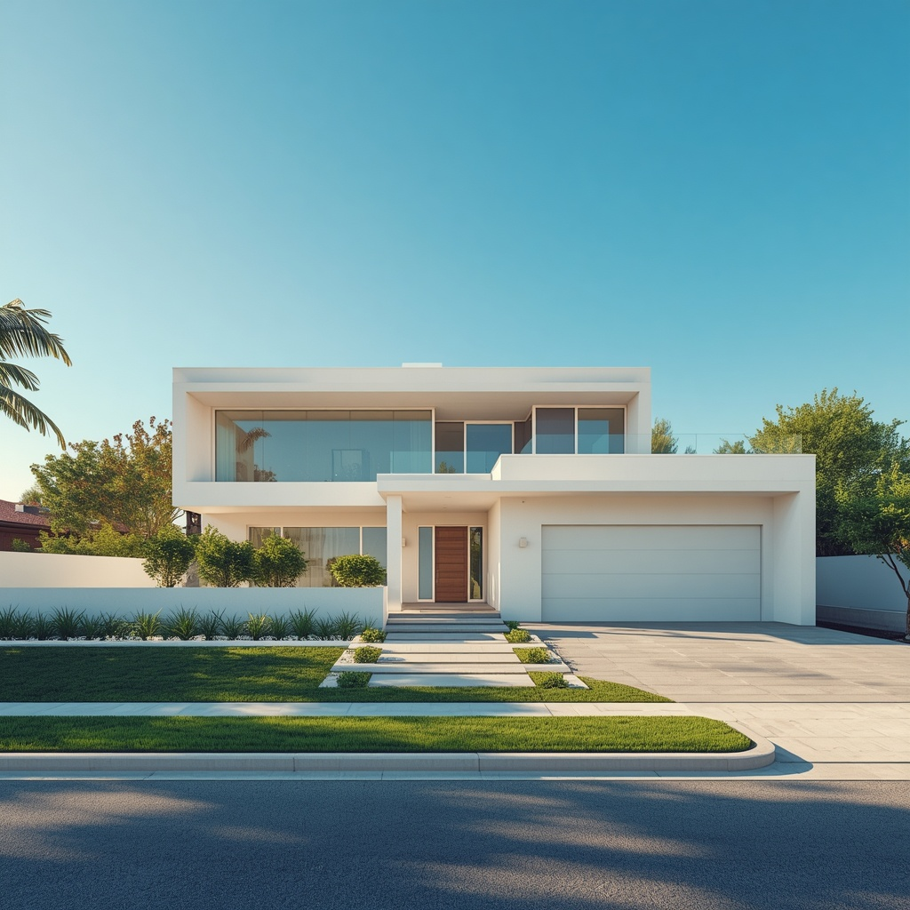

RÉPONSE SIMULÉE À PARTIR DES DOCUMENTS FICTIFS
VOTRE ESPACE FAMILIAL
Bonjour
Votre vie numérique, enfin retrouvée.
Retrouvez ce qui compte,
où que cela se trouve.
Vos documents et photos réunis dans un même espace de recherche.
Vous choisissez les données à importer ou connecter.
Découvrir Famili-IA
Comment pouvons-nous vous appeler ?
Votre prénom nous permettra de personnaliser votre expérience.
Découvrir Famili-IA
Bonjour !
Comment souhaitez-vous commencer ?
Découvrez Famili-IA avec des exemples ou choisissez vos propres fichiers.
Démo Famili-IA
Découvrez une recherche
Choisissez un exemple pour voir les résultats. Tout est fictif : aucun compte n'est connecté.
Exemples fictifs : les sources et les résultats illustrent le fonctionnement de Famili-IA.
Votre foyer en un coup d’œil
Vos prochaines échéances
Analyse en cours...
Que cherchez-vous ?
Posez votre question simplement. La recherche reste locale et les réponses factuelles indiquent le document et l’extrait qui les justifient.
Recherche multi-sources — expérimental
Recherche locale dans les noms et textes dont la provenance a été enregistrée et vérifiée. Pour les anciens fichiers sans provenance, seuls les noms sont recherchés ici. L'index reste en mémoire ; il ne couvre pas tout l'appareil ni tout Drive et l'accès aux originaux n'est pas vérifié.
Sources et périmètre
Échéances proposées — expérimental
Du jour aux 90 prochains jours inclus, à partir des textes extraits fiables déjà présents dans Famili-IA. Ces propositions sont à vérifier : elles ne créent aucune alerte ni notification. Les échéances passées et plus éloignées ne sont pas affichées.
Les sources peuvent être incomplètes ou périmées ; l'accès actuel aux originaux n'est pas vérifié. L'absence de proposition ne prouve pas l'absence d'échéance.
Documents à vérifier
Type
Provenance
Essayez une question
Les fichiers et contenus choisis sont traités localement ; des données peuvent être conservées dans le stockage de ce navigateur. Rien n'est envoyé à un serveur Famili-IA par ce parcours.
RÉSULTATS DE DÉMONSTRATION
Voici ce que j'ai trouvé
Documents sources
Vérifiez l'information dans son contexteAucun résultat trouvé. Essayez de reformuler votre question ou ajoutez des documents.
VOTRE ESPACE DE VIE
Maison
Gérez vos biens et équipements domestiques.

Ma maison
Équipements
Aucun équipement trouvé.
ESPACE PRIVÉ ET PARTAGÉ
Famille
Protège ceux qui comptent.
Membres
Vos proches et collaborateursDocuments importants
À partager avec votre famille
Mode urgence
En cas d'imprévu, votre famille peut accéder aux informations essentielles.● Activé
SUIVI DE VOTRE ESPACE
Alertes
Gérez vos rappels et documents arrivant à échéance.
Les rappels du navigateur sont vérifiés lorsque Famili-IA est ouvert. Aucun détail de document n'apparaît dans la notification.
Préférences des notifications
DÉTAILS ÉQUIPEMENT
Chargement...
Fiche d'informations de l'équipement.
VOTRE COMPAGNON NUMÉRIQUE
Assistant Famili-IA
Posez vos questions sur vos documents. Les réponses indiquent leurs sources et s'abstiennent lorsqu'une information n'est pas vérifiable.
AJOUT DE DOCUMENTS
Importer un document
Ajouter des fichiers depuis votre appareil ou Drive.
Glissez un fichier ici
Formats acceptés : .txt, .md, .pdf, .jpg, .jpeg, .png, .docx, .xlsx, .xls. Indexation en arrière-plan avec progression, sans limite de nombre (10 Mo max par photo ou PDF, 1 Mo par autre fichier).
Retrouvez et gérez les fichiers importés dans votre inventaire central.
Sur mobile, choisissez plusieurs fichiers dans le dossier de votre choix : la sélection de dossier complète n'est pas prise en charge par l'application.
MON COMPTE
Profil & Paramètres
Gérez vos préférences et informations personnelles.
VOTRE ESPACE NUMÉRIQUE
Vos données
Consultez les fichiers locaux, les sources Google Drive et OneDrive et les exemples fictifs, avec leur provenance.
Vos fichiers restent sous votre contrôle
0Fichiers visibles
0Fichiers locaux
0Sources Drive
0Exemples fictifs
0Sources OneDrive
Moments de vie
Retrouvez vos photos à partir des informations que vous avez ajoutées. La recherche et les corrections restent sur cet appareil.
Affiner l’inventaire
Inventaire des fichiers
Gestion des données
La suppression efface les données enregistrées par Famili-IA sur cet appareil. Les fichiers d’origine locaux, Google Drive et OneDrive ne sont pas supprimés.
Google Drive : état de session inconnu.
OneDrive : la déconnexion locale ne révoque pas l'autorisation Microsoft et ne supprime pas les copies enregistrées.
Gérer les autorisations MicrosoftESPACE FAMILIAL
Plus
Vos autres espaces : suivi, famille, assistant et gestion des données.